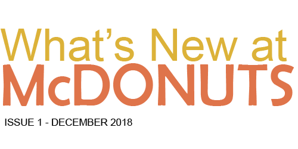

Kyle Corpuz is a sweet 9-year old boy who loves to play with his airplane toy and dreams of being a great pilot when he grows up. He loves to play at school with his friends and go fishing with his dad. Our good friend Kyle has his own unique burden, though Kyle is diabetic. At a very young age, he learned that he would need to change his diet and regulate his insulin.
Here at McDONUTS, we heard Kyle's story and wanted to help him raise money for his team in the annual Walk to Stop Diabetes. Thats why we've designed the new KC donut. This sugar-free baked donut is made of gluten-free flour,granular such as splenda as a sugar alternative, baking powder, salt, vanilla extract, egg, butter and milk. And it is topped with unsweetened cinnamon. Order a KC donut, and 25% of the proceeds will go to her team.
"We've been coming to McDONUTS for long as I can remember, and it's really cool to have my own donut on the menu, said Kyle. "I'm so excited to surprise all the other families at the walk with the donation in October."
Each year, McDONUTS vies for the title of "Best Donut Shop in Town" in the annual donut competition hosted by the Krispy Kreme. To vote, just visit the paper's website at www.krispykreme.com/donutcompetition/pizza/McDONUTS and click the "vote" button!
It's that time of the year again! On December 28, come in to test your sweet tooth and take on the "Galactic Donut," a hefty hunk of donut cake that weighs in at two pounds and is loaded with all of your sweetest toppings. Finish in 10 mins to get your face on McDONUTS Wall of Fame! Register by December 14 to reserve a spot. Many will compete, few will win!
From December 12-18, bring in five non-perishable food items, and get a sige order of breadsticks or hot choco for free! Help McDONUTS provide a holiday feast to those in need this season.
Once a year, we add a new customer-submitted donut to the menu. We'll be accepting submissions from now until January 20. The McDONUTS staff will vote on the top five recipes and bake each one. The donuts will have a one-month trial period on the menu where customers will get to pick their favorite. The winning donut will be added to the menu, and naming rights go to the top chef!